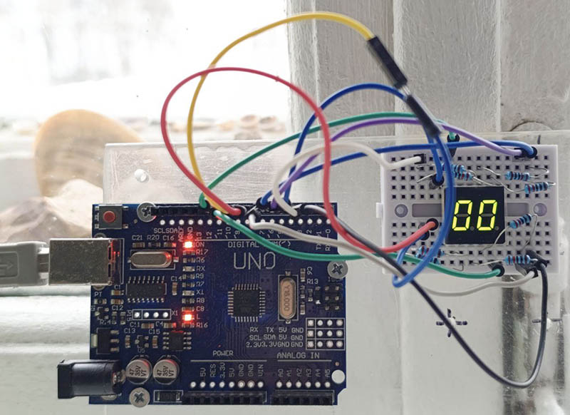

Динамическая индикация
Принцип
При динамической индикации разряды индикатора светятся не постоянно, а по очереди. Если переключать разряды достаточно быстро, то инерционность человеческого зрения создаёт иллюзию одновременного свечения всех разрядов, в каждом из которых отображается свой знак. Инерционность зрения проявляется в том, что зрительное восприятие предмета сохраняется ещё по меньшей мере несколько миллисекунд после того, как свет от него перестал воздействовать глаз. Из-за инерционности зрения мы воспринимаем быстро сменяющиеся последовательно смещаемые неподвижные изображения как одно изображение непрерывно движущегося объекта — этот эффект лежит в основе кинематографии. Если частота смены изображений не очень высока, то изображение может мерцать. У человека критическая частота мерцания, выше которой изображение перестаёт восприниматься мерцающим, составляет 50-90 Гц. Она зависит от интенсивности света, цвета объекта, места воздействия света на сетчатку глаза, возраста, усталости и др.
Задача
Модифицировать конфигурацию из предыдущего этюда так, чтобы разряды двухразрядного индикатора зажигались попеременно с заданной частотой.
Реализация
Электрическая схема как в предыдущем этюде, в программе же добавлен параметр t командной строки, в котором передаётся целое число — количество миллисекунд свечения каждого разряда до переключения. В основном цикле программы временной интервал отслеживается с использованием функции millis(). Когда проходит заданное время, текущий разряд индикатора гаснет, а другой загорается. Программа запускается с отображением цифр 0 и 7, переключающихся через 1000 мс. Передавая в параметре t постепенно уменьшающееся время, можно наблюдать, как сначала две видимые раздельно цифры образуют единое постоянно светящееся, но мерцающее число, а при дальнейшем уменьшении t исчезнет и мерцание. Можно сравнить наступление этих моментов при разном внешнем освещении и при разной степени собственной усталости — значения могут довольно сильно отличаться. Чтобы отобразить не 07, а другие цифры и знаки, следует ввести их, используя параметры p, m и v, как описано в предыдущем этюде.
Электрическая схема

Результаты и наблюдения


Показаны осциллограммы напряжений на катодах двухразрядного индикатора при t=10 мс. Легко видеть, что эти напряжения противофазны: когда на одном разряде низкий уровень, что соответствует свечению, на втором высокий — разряд погашен.
На осциллограмме этого не видно, но наблюдение за живым сигналом показывает нестабильность длительности включённого состояния и периода прямоугольного сигнала. Последний скачками меняется приблизительно на 0,25 мс. Это может быть связано с отмеченными здесь особенностями реализации функции millis().
По наблюдению автора, переход от восприятия изображения на индикаторе как двух попеременно загорающихся отдельных цифр к восприятию их как одного мерцающего двухразрядного числа происходит при снижении t до 70-60 мс, а при t=14-12 мс исчезает и мерцание.
Файлы
Текст программы содержится в файле Ind_y_Ardu.ino, который можно получить с Github по ссылке.
Как вариант, можно получить с Github весь репозиторий цикла "Ардуино и индикаторы" и выполнить команду
git restore -s 2dig02 -- Ind_y_Ardu.ino
Файл Ind_y_Ardu.ino в рабочей области будет перезаписан требуемой версией.